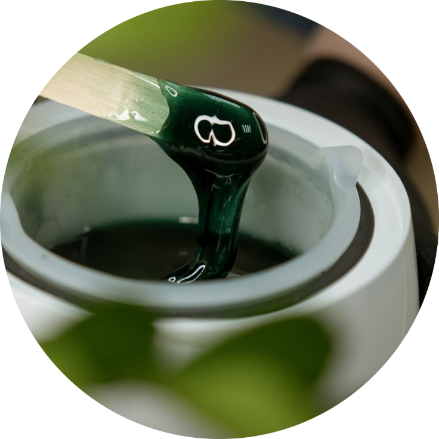

Funcionários

Maria Ximenes
Depilação é um serviço estético voltado para a remoção de pelos indesejados em diferentes áreas do corpo e do rosto, promovendo uma aparência mais limpa e suave. O objetivo principal é atender às necessidades e preferências de cada cliente, oferecendo resultados duradouros e minimizando desconfortos. O serviço é personalizado, podendo incluir áreas específicas, como pernas, axilas, buço, sobrancelhas ou até o corpo inteiro. Nossos profissionais especializados garantem a segurança, a higienização adequada dos materiais e o conforto durante o processo, proporcionando uma experiência agradável e satisfatória.